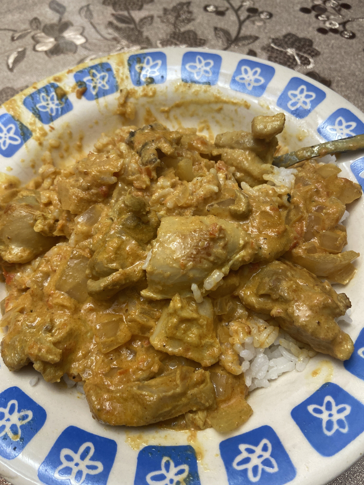

Below is a dish that I have cooked a few times and its the Chicken Tikka Masala! This dish is very rich in flavor with the numerous spices that
all bring in different points to this dish that make it taste fantastic. From the searing of the chicken thighs which have been marinated in yogurt, to the creaminess that comes from adding in the heavy cream,
there are so many aspects to this dish which make it great. Below is a picture of the most recent one I have made and there are still definite improvements that I can make. The recipe comes from
a youtuber named Joshua Weissman, and here is a link to the video.
Chicken Tikka Masala Recipe
Chicken Tikka Masala Recipe

Ingredients:
Tikka Paste:
- Tbsp coriander seeds
- 1/2 tsp cumin
- 1 Tbsp garam masala
- 1 tsp turmeric
- 7 cloves of garlic
- 1-2 inch knob of ginger
- 1-2 fresno chilies depending on size (your choice to add chilies)
- 1/4 cup water
- 2 Tbsp oil
Marinated Chicken:
- 1 cup of yogurt
- 2 lbs chicken thigh (very important that its thigh, breast is very dry and no flavor)
- 2 Tbsp of tikka paste, the one made above
- 2 tsp kosher salt
The Sauce:
- 28 oz can whole peeled tomatoes, blended strained (not necessary to strain)
- 4 Tbsp unsalted butter
- 1 large white onion (very large difference between onions, white is very sweet)
- 1.25 cup heavy cream
- 1 Tbsp paprika
Cooking Method:
- In a small saucepan, add in all the spices and toasting for 2 minutes. Remove and cool.
- Add spices to a blender and blend until fine as possible.
- Add in garlic, peeled ginger, garam masala, turmeric powder, and fresno chilis. Add water and blend until smooth.
- Drizzle in canola oil while blending until smooth.
- Cut chicken thigh into bite size pieces.
- In a bowl mix together, whole milk yogurt, tikka masala paste, and kosher salt. Whisk together.
- Add in the chicken and toss to thoroughly coat. Cover with plastic wrap and marinate for 20 minutes or overnight in the fridge.
- Wash and rinse rice twice times through then cook via pressure cooker or rice cooker.
- For the final curry, add in the can of tomatoes to the blender and blend until smooth. Pass through a fine mesh strainer. Place to the side.
- In a medium saucepan over medium-high heat, add oil to coat the bottom. Sear chicken on both sides 3-4 minutes per side. Place to the side.
- Reduce heat to medium and add in butter to melt before adding diced onions and saute until translucent.
- Add in the rest of the tikka masala paste along with paprika and chili powder. Cook and stir often until paste starts to stick to pan.
- Add in puree tomatoes and bring to a simmer stirring occasionally over medium heat for 10 minutes.
- Add in the heavy cream and mix until thoroughly combined.
- Add chicken back to the pan coating it in the sauce and bring to a simmer. Simmer for an additional 10-15 minutes.
- Season to taste with salt and plate with rice. Garnish with cilantro and serve.